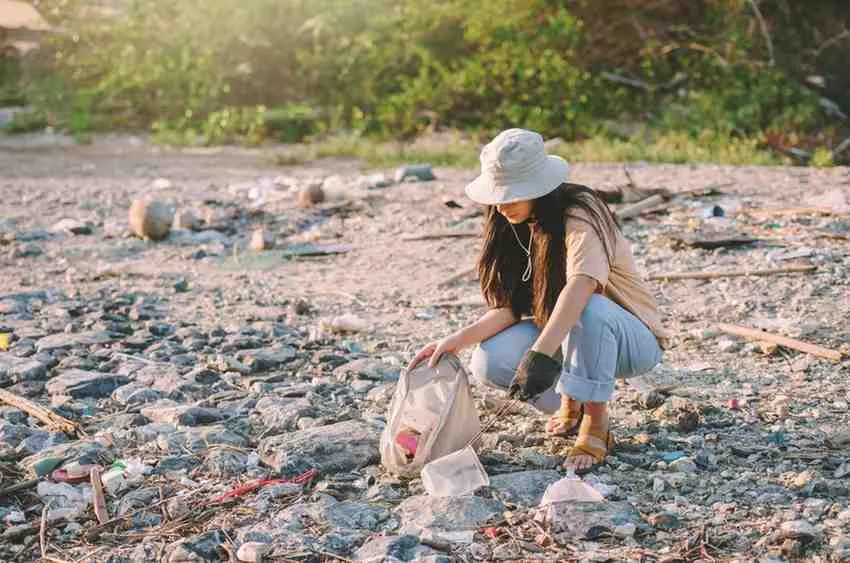
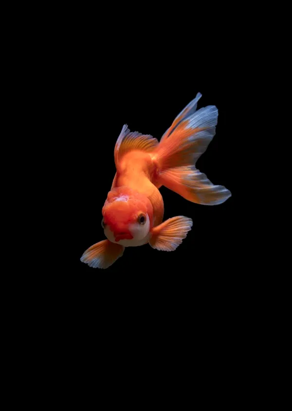
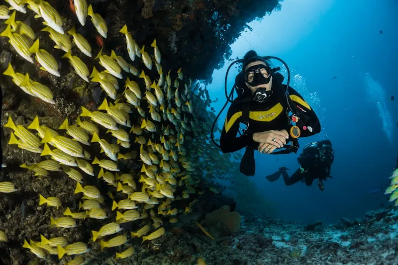

Our Conservation Programs
Deploying direct, strategic initiatives globally to neutralize threats and orchestrate ecological recovery loops.

Beach Cleanup Initiatives
Mobilizing thousands of volunteers to intercept coastal plastic and clean shorelines before debris enters deep ocean channels.

Coral Restoration Projects
Cultivating heat-resilient coral fragments inside specialized ocean nurseries to restore dying reefs.

Advanced Marine Research
Tracking vital ocean biometrics to engineer data-driven protection strategies.
Environmental Education
Inspiring the next generation of ocean stewards by embedding marine literacy curriculum directly into global schools.

Wildlife Protection & Sustainable Advocacy
Enforcing designated marine protected zones and lobbying industries globally for fully traceable.